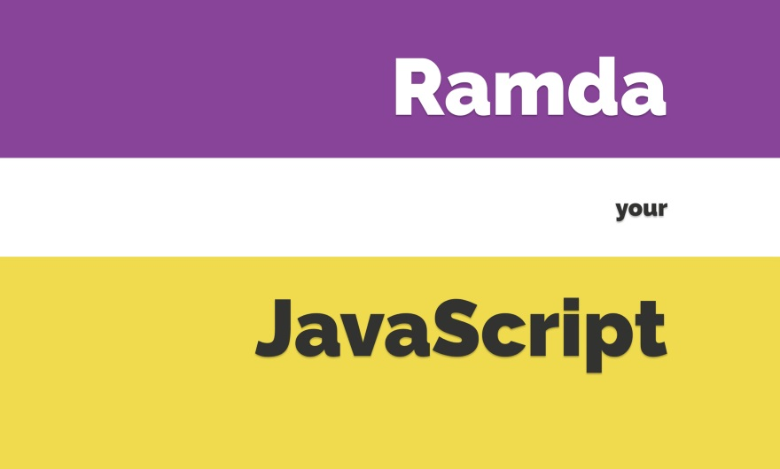

There are already several excellent libraries with a functional flavor. Typically, they are meant to be general-purpose toolkits, suitable for working in multiple paradigms. Ramda has a more focused goal.
We wanted a library designed specifically for a functional programming style, one that makes it easy to create functional pipelines, one that never mutates user data.
What's Different?
Ramda emphasizes a purer functional style. Immutability and side-effect free functions are at the heart of its design philosophy. This can help you get the job done with simple, elegant code.
Ramda functions are automatically curried. This allows you to easily build up new functions from old ones simply by not supplying the final parameters.
The parameters to Ramda functions are arranged to make it convenient for currying. The data to be operated on is generally supplied last.
The last two points together make it very easy to build functions as sequences of simpler functions, each of which transforms the data and passes it along to the next. Ramda is designed to support this style of coding.